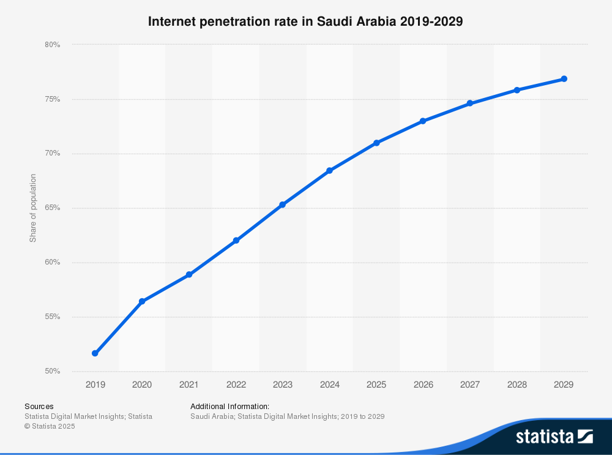
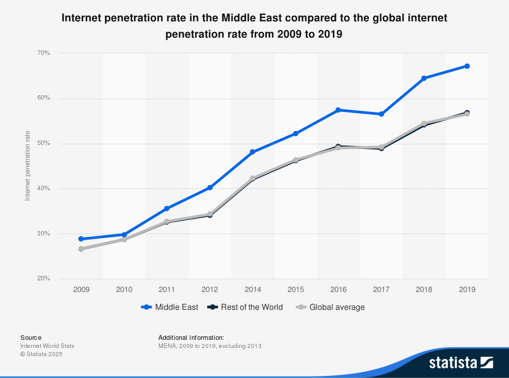

Discover the Web
a GIN446 educational project
Internet Stats in Middle East & Lebanon
Quick comparison between the two regions across various categories
Region / Country
Internet Users
Penetration (%)
Avg Download Speed (Mbps)
Source
Lebanon
5.34 million
91.6%
16.13 (fixed), 43.9 (mobile)
Speedtest
Middle East
348 million
70.2%
Varies by country
Intelligent CIO
Past and expected Internet usage in Saudi Arabia

Internet penetration rate in the Middle East compared to the global internet penetration rate from 2009 to 2019
